| 所見 | Basedow病 | 無痛性甲状腺炎 |
|---|---|---|
| 所見 | Basedow病 | 無痛性甲状腺炎 |
| 甲状腺機能亢進症状 | あり | あり（一過性） |
| びまん性甲状腺腫 | あり | あり |
| 眼球突出・眼症 | あり（特有） | なし |
| 前脛骨部粘液水腫 | あり（特有） | なし |
| TRAb | 陽性 | 陰性 |
| RI摂取率 | 上昇 | 低下 |
| 経過 | 持続 | 自然回復 |
| サイン | 所見 | みられるか |
|---|---|---|
| サイン | 所見 | みられるか |
| Dalrymple徴候 | 瞼裂開大 | ○ |
| von Graefe徴候 | 下方視で上眼瞼が遅れる | ○ |
| Stellwag徴候 | 瞬目減少 | ○ |
| Möbius徴候 | 輻輳不全 | ○ |
| 眼球突出（Exophthalmos） | 眼球前突 | ○ |
| 眼瞼下垂（Ptosis） | 上眼瞼が下垂 | ×（みられない） |
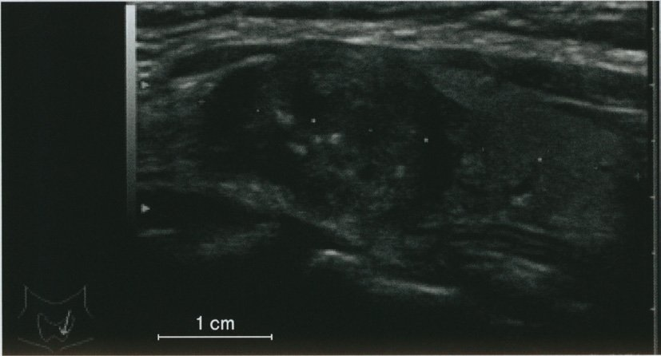
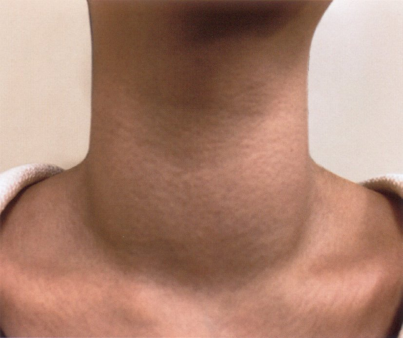
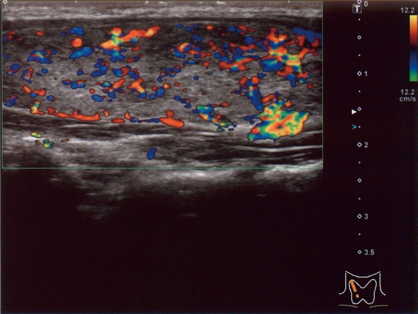
| 疾患 | TRAb | RI摂取率 | CRP | 特徴 |
|---|---|---|---|---|
| 疾患 | TRAb | RI摂取率 | CRP | 特徴 |
| Basedow病 | 陽性 | ↑ | 正常 | 眼症・TRAb陽性 |
| 無痛性甲状腺炎 | 陰性 | ↓ | 正常 | 産後・自然回復 |
| 亜急性甲状腺炎 | 陰性 | ↓ | ↑↑ | 疼痛・発熱 |
| Plummer病 | 陰性 | 限局的↑ | 正常 | 機能性結節 |
| 甲状腺癌（機能性） | 陰性 | 様々 | 様々 | 腫瘤あり |
| 検査 | 所見 | 機序 |
|---|---|---|
| 検査 | 所見 | 機序 |
| CK | ↑ | 筋代謝障害→筋細胞傷害 |
| LDLコレステロール | ↑ | LDL受容体発現↓→LDL分解↓ |
| TG | ↑（軽度） | 脂質代謝全般↓ |
| TSH | ↑↑ | 甲状腺ホルモン↓→フィードバック→TSH↑ |
| FT4・FT3 | ↓ | 甲状腺機能低下 |
| Hb（貧血） | ↓（正球性） | 赤血球産生↓ |
| Na | ↓（軽度） | ADH増加（水貯留）→希釈 |
| TRAb | 陰性 | 橋本病では通常陰性（抗TPO抗体が陽性） |
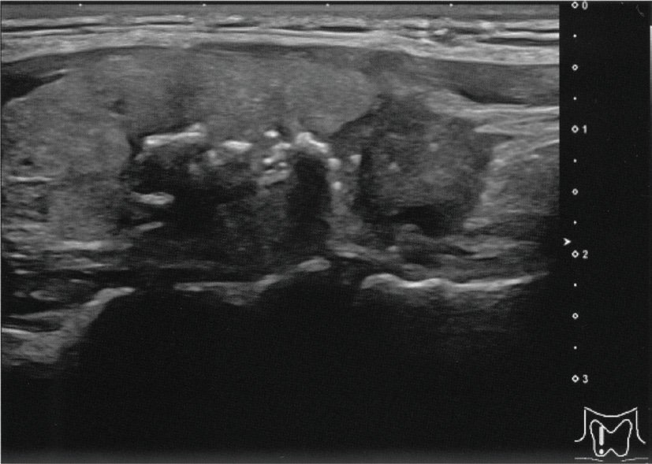
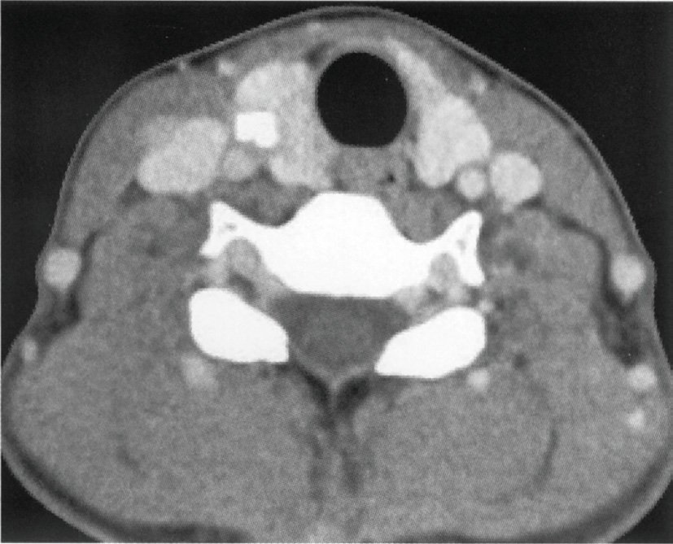
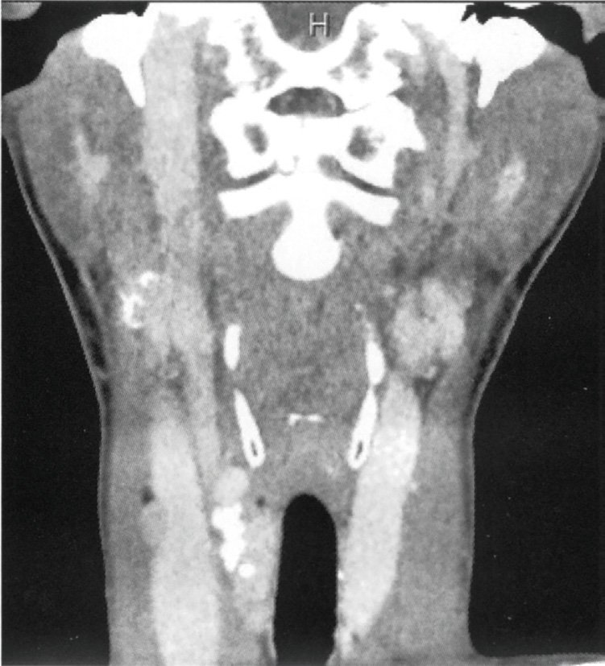
| 重症度 | 治療 |
|---|---|
| 重症度 | 治療 |
| 軽症（疼痛のみ） | NSAID + β遮断薬（頻脈あれば） |
| 中等症〜重症（発熱・強い疼痛） | 副腎皮質ステロイド（PSL 15〜40mg/日） |
| 頻脈・動悸 | β遮断薬（対症） |
| 抗甲状腺薬 | × 無効（漏出が原因） |
| 抗菌薬 | × 細菌性でないため無効 |
| 癌の種類 | 由来 | 腫瘍マーカー | 特徴 |
|---|---|---|---|
| 癌の種類 | 由来 | 腫瘍マーカー | 特徴 |
| 乳頭癌（最多80%） | 濾胞細胞 | サイログロブリン | 砂粒状石灰化・頸部リンパ節転移・予後良好 |
| 濾胞癌 | 濾胞細胞 | サイログロブリン | 血行性転移（肺・骨）・被膜浸潤で診断 |
| 髄様癌 | C細胞（傍濾胞細胞） | カルシトニン・CEA | MEN2A/2B・RET遺伝子 |
| 未分化癌 | 様々 | — | 予後最悪・急速増大・高齢者 |
| 悪性リンパ腫 | リンパ系 | 可溶性IL-2R | 橋本病から発生 |
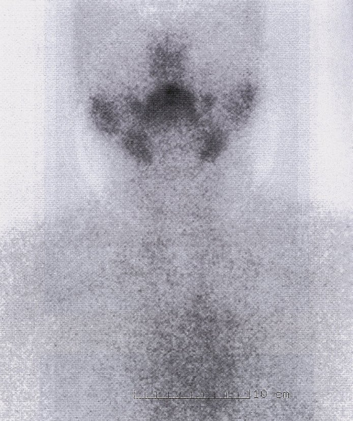
| 浮腫の種類 | 原因 | 機序 |
|---|---|---|
| 浮腫の種類 | 原因 | 機序 |
| 非圧痕性（粘液水腫） | 甲状腺機能低下症 | GAG沈着→水分保持→圧痕残らない |
| 非圧痕性（リンパ浮腫） | リンパ節郭清・フィラリア | リンパ液貯留 |
| 圧痕性 | 心不全・腎不全・肝硬変・低アルブミン | 静水圧↑or膠質浸透圧↓ |
| 副作用 | 頻度 | 重要度 |
|---|---|---|
| 副作用 | 頻度 | 重要度 |
| 無顆粒球症 | 0.3〜0.5% | 最重要（発熱→即座に白血球検査） |
| 皮膚症状（発疹・蕁麻疹・瘙痒） | 3〜5% | 中等度 |
| ANCA関連血管炎（PTU特有） | 稀 | 重篤（腎・肺・皮膚） |
| 肝機能障害 | 稀 | 重篤（稀に劇症肝炎） |
| 関節痛 | 稀 | 軽度 |
| 悪性高熱症 | なし（抗甲状腺薬の副作用ではない） | — |
| 所見 | 詳細 |
|---|---|
| 所見 | 詳細 |
| 外眼筋肥大（内直筋・下直筋が多い） | TRAb関連炎症・線維化 |
| 眼窩脂肪・結合組織増大 | GAG蓄積→体積増大→眼球前突 |
| 眼球突出（proptosis） | 眼窩内容物増加→前方突出 |
| 眼球運動障害 | 外眼筋肥大→可動域制限→複視 |
| 視神経圧迫（重症） | 眼窩先端部での視神経圧迫→視力低下 |
| 喫煙との関連 | 喫煙は眼症を悪化させる→禁煙指導 |
| 癌の種類 | 特徴 | 予後 |
|---|---|---|
| 癌の種類 | 特徴 | 予後 |
| 乳頭癌（80%） | 砂粒状石灰化・頸部リンパ節転移 | 良好（10年生存95%以上） |
| 濾胞癌（10%） | 血行性転移（肺・骨）・被膜浸潤 | 比較的良好 |
| 髄様癌（5%） | カルシトニン↑・CEA↑・MEN2関連 | 中等度 |
| 未分化癌（2%） | 急速増大・炎症反応↑・高齢者 | 最悪（中央生存3〜6か月） |
| 悪性リンパ腫 | 橋本病から発生・IL-2R↑ | 治療反応性比較的良好 |
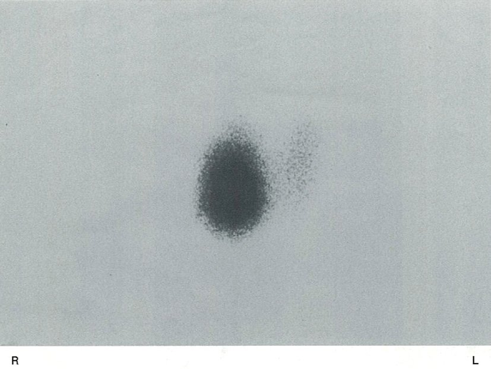
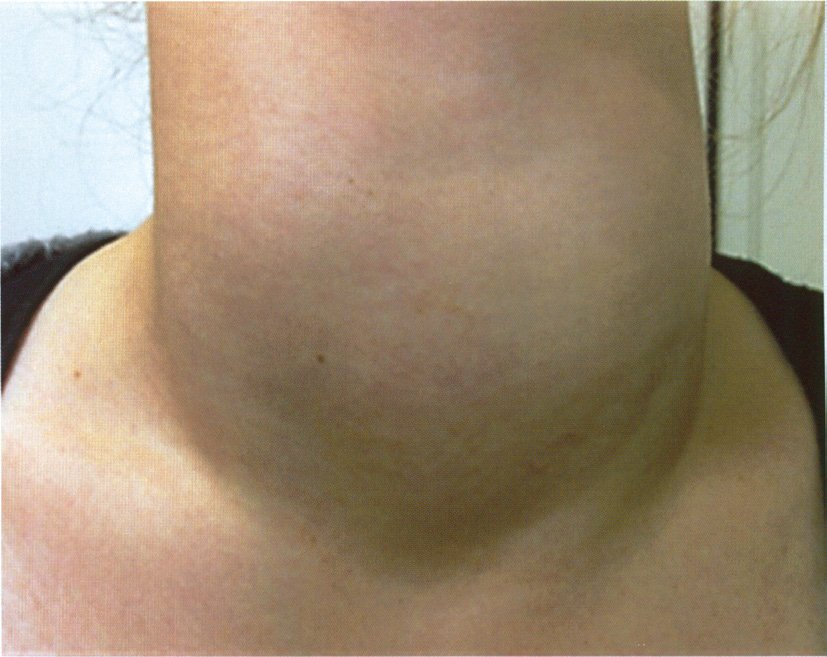
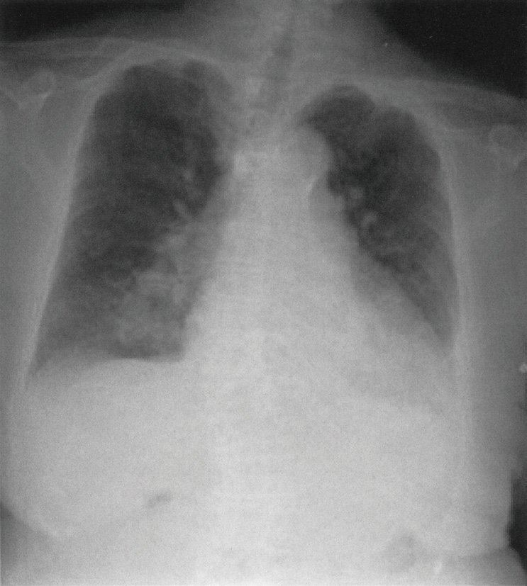
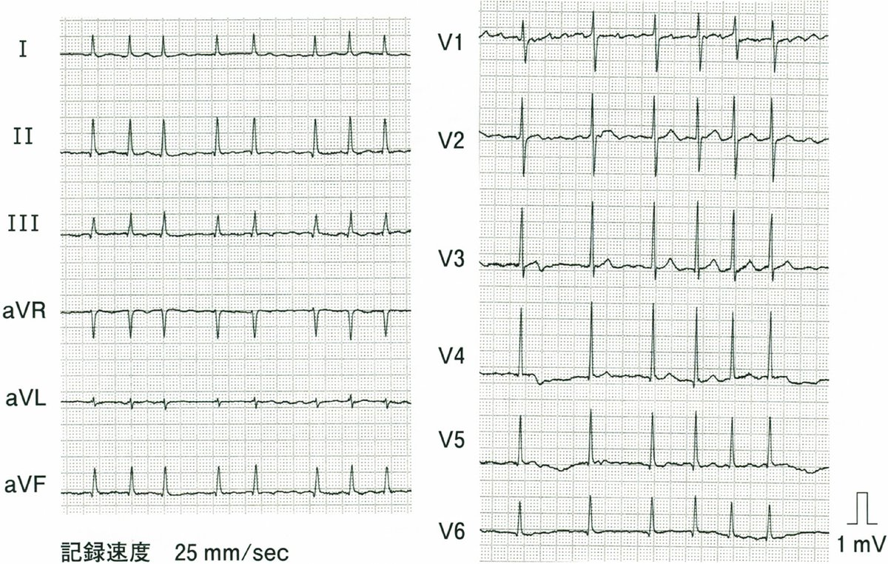
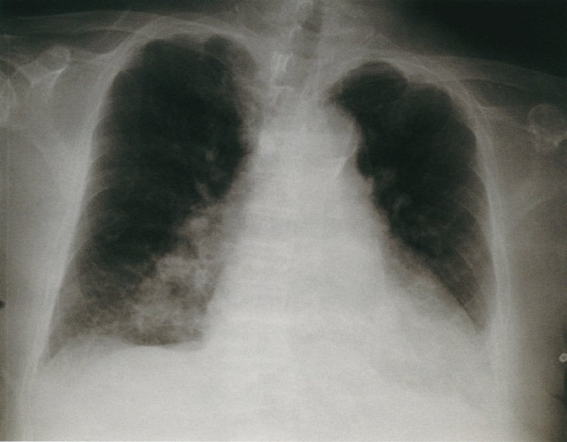
| 誘因 | 例 |
|---|---|
| 誘因 | 例 |
| 寒冷（最多） | 冬季・低体温環境 |
| 感染症 | 肺炎・尿路感染症 |
| 薬剤 | 鎮静薬・麻薬・抗精神病薬・利尿薬 |
| 手術・外傷 | ストレス反応 |
| 甲状腺ホルモン中断 | 処方の中断・コンプライアンス不良 |
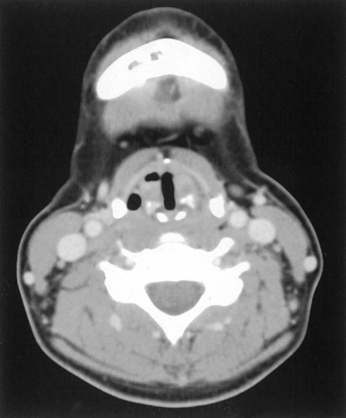
| 合併症 | 機序 | 症状 |
|---|---|---|
| 合併症 | 機序 | 症状 |
| 血腫 | 術後出血→頸部圧迫 | 呼吸困難（緊急対応） |
| テタニー（低Ca血症） | 副甲状腺損傷→PTH↓→Ca↓ | Chvostek徴候・Trousseau徴候 |
| 反回神経麻痺 | 反回神経損傷 | 嗄声・嚥下障害（一時的or永続的） |
| 甲状腺機能低下症 | 甲状腺全摘→ホルモン産生↓ | 永続的低下→T4補充が必要 |
| 創部感染 | 手術部位感染 | 発熱・創部発赤 |
| 原因 | 機序 |
|---|---|
| 原因 | 機序 |
| 筋損傷（転倒・打撲・手術） | 直接的な筋細胞破壊 |
| 横紋筋融解症（スタチン等） | 薬剤による筋細胞傷害 |
| 甲状腺機能低下症 | 筋代謝障害→CK漏出 |
| 筋炎・多発性筋炎 | 炎症による筋細胞傷害 |
| 心筋梗塞（CK-MB↑） | 心筋細胞壊死 |
| 激しい運動 | 生理的筋細胞傷害 |
| 高尿酸血症 | CK高値の原因でない |
| 項目 | 内容 |
|---|---|
| 項目 | 内容 |
| 頻度 | 甲状腺癌の約80%（最多） |
| 好発年齢 | 30〜50歳代（若〜中年） |
| 性差 | 女性に多い（4：1） |
| 超音波所見 | 砂粒状石灰化（点状高エコー）・低エコー・境界不明瞭 |
| 転移形式 | 頸部リンパ節転移が多い（血行性転移は少ない） |
| 予後 | 良好（10年生存率95%以上） |
| 腫瘍マーカー | サイログロブリン（術後再発モニタリング） |
| 遺伝子変異 | BRAF V600E変異（約60%）・RET/PTC融合遺伝子 |
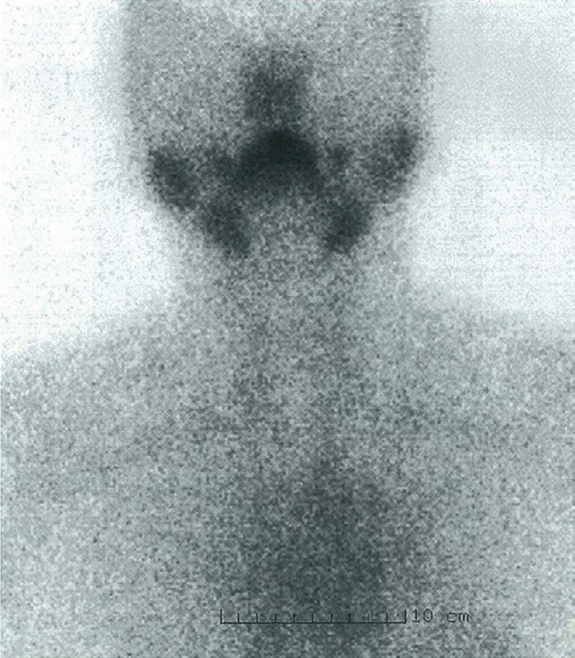
| 疾患 | TRAb | RI摂取率 | 圧痛 | 上気道炎先行 |
|---|---|---|---|---|
| 疾患 | TRAb | RI摂取率 | 圧痛 | 上気道炎先行 |
| Basedow病 | 陽性 | ↑ | なし | なし |
| 無痛性甲状腺炎 | 陰性 | ↓ | なし | なし |
| 亜急性甲状腺炎 | 陰性 | ↓ | あり（圧痛） | あり（先行） |
| Plummer病 | 陰性 | 局所↑ | なし | なし |
| 検査 | 所見 | 機序 |
|---|---|---|
| 検査 | 所見 | 機序 |
| CRP | 著明高値（↑↑） | ウイルス性炎症 |
| 赤沈 | 著明高値（↑↑） | 炎症・急性期蛋白増加 |
| サイログロブリン | 高値（↑） | 甲状腺細胞破壊→漏出 |
| FT3/FT4 | 初期↑→後期↓ | 甲状腺ホルモン漏出→その後枯渇 |
| TSH | 初期↓→後期↑ | FT3/FT4の変化に伴う |
| TRAb | 陰性 | Basedow病ではないため |
| RI摂取率 | 低下 | 甲状腺機能低下・炎症 |
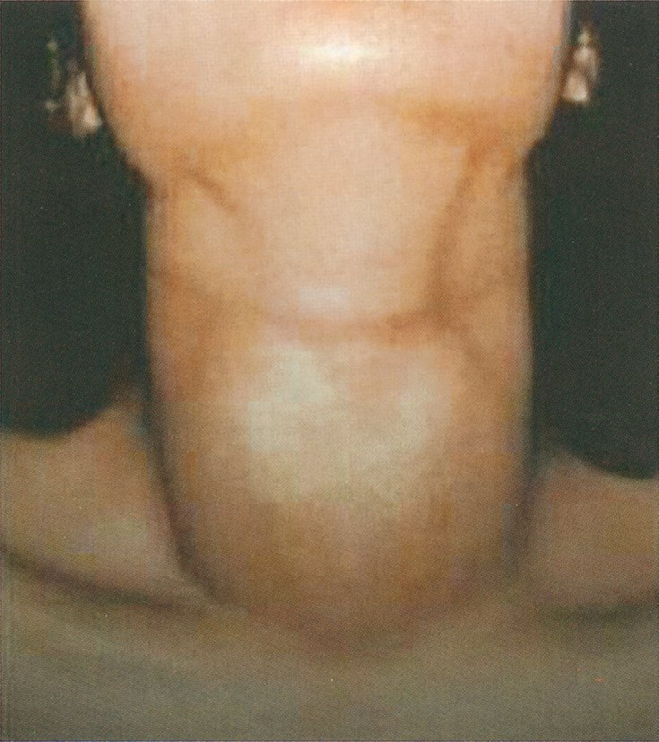
| 治療 | 適応・役割 |
|---|---|
| 治療 | 適応・役割 |
| 抗甲状腺薬（MMI・PTU） | 第一選択（ホルモン合成阻害） |
| β遮断薬 | 症状緩和（頻脈・振戦・発汗対症） |
| 放射性ヨード（RI）治療 | 薬物効果不十分・再発・副作用時（妊婦・小児は慎重） |
| 手術（甲状腺亜全摘） | 薬物不応・大きな甲状腺腫・患者希望 |
| サイロキシン | 禁忌（甲状腺機能亢進症に対して） |
| 無機ヨード | 術前処置・甲状腺クリーゼの緊急時に使用 |
| 疾患 | 体重変化 | 機序 |
|---|---|---|
| 疾患 | 体重変化 | 機序 |
| 甲状腺機能亢進症 | 体重減少 | 代謝亢進 |
| 甲状腺機能低下症 | 体重増加（肥満） | 代謝低下 |
| Cushing症候群 | 体重増加（中心性肥満） | コルチゾール→脂肪再分布 |
| 成長ホルモン過剰（先端巨大症） | 筋肉増大（体重増加） | GH→蛋白合成↑ |
| インスリノーマ | 体重増加 | 低血糖→食欲↑ |
| Addison病 | 体重減少 | コルチゾール↓→食欲低下 |
| 疾患 | 自己抗体 |
|---|---|
| 疾患 | 自己抗体 |
| 甲状腺機能亢進症（Basedow病） | 抗TSH受容体抗体（TRAb/TSAb） |
| 橋本病 | 抗TPO抗体・抗サイログロブリン抗体 |
| 重症筋無力症 | 抗アセチルコリン受容体（AChR）抗体 |
| 悪性貧血 | 抗内因子抗体・抗胃壁細胞抗体 |
| PBC（原発性胆汁性胆管炎） | 抗ミトコンドリア抗体（AMA） |
| 自己免疫性肝炎（AIH） | 抗核抗体（ANA）・抗平滑筋抗体（SMA） |
| 関節リウマチ（RA） | リウマチ因子（RF）・抗CCP抗体 |